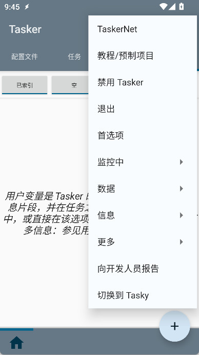

Tasker 上手一周，我把手机交给了一个会自己思考的助手
第一次装 Tasker 时我以为就是个定时开关，一周后才发现它能替你做的事远超想象。从简单场景到踩坑实录，聊聊这款安卓自动化神器的真实体验。
上周三我还在每天晚上 11 点手动切勿扰、早上 7 点手动关——直到朋友扔给我一句：你还没用过 Tasker？说实话，之前刷到过几次这个名字，但每次看到界面上满屏的英文术语和层层嵌套的逻辑，就觉得这东西不是给普通用户准备的。这次抱着试试看的心态装上了，结果一周下来，我手机上至少跑了七八个 Profile，从最基础的昼夜模式到上下班自动切换静音，连我自己都开始惊讶它能做到什么程度。它的tasker官网上也有不少社区分享的 Profile 可以直接导入，省了自己从零搭的功夫。
第一眼界面：不像 App，像个开发环境
安装过程本身还算顺畅，安装包从官方下载就能拿到，但刚打开 Tasker 的那一刻我就被劝退了半秒——主界面根本不是传统 App 那种"首页 + 设置"的结构，而是直接扔给你三个标签页：Profiles、Tasks、Scenes，外加一个藏在菜单里的变量面板。

要让 Tasker 正常干活，权限这关必须过。我数了一下，它至少要电池优化白名单、常驻通知、自启动、后台锁定这四样。小米用户可能还要额外去设置里把 Tasker 的"后台弹出界面"和"显示悬浮窗"也开了——这一步我没做，结果第一个 Profile 死活不触发，后来翻了半天才找到原因。
说句实在话，界面设计非常"工程师友好"。每个 Profile 点进去都是一行 Context（触发条件）加一行 Enter Task（触发后执行什么），想加条件就点加号、想调逻辑就长按编辑。它没有引导页、没有新手教程弹窗、甚至没有一个"从模板开始"的按钮——你要么自己从零搭，要么去社区扒别人的 Profile 导入。但恰恰是这种"裸奔式"的简洁，反而让你能快速理解它的核心模型：条件 → 动作，仅此而已。
时间上下文：我写的第一个 Profile 就是它
我写的第一个 Profile 极其简单——"夜间模式"：条件是时间窗口 23:00 到次日 07:00，Enter Task 做三件事：亮度调到 15%、开勿扰模式、关掉 Wi-Fi。听起来很简单对吧？但我栽了第一个跟头：跨午夜的时间窗口在其他 App 里可能要写两条规则，Tasker 这里你直接填 23:00 开始、07:00 结束就行，它自动识别"开始比结束晚 = 跨午夜"。就这一个小细节，让我对 Tasker 的好感瞬间拉满。
然后我又加了一条 Day Context，只让它在工作日生效——周末熬夜看球不想被强制调暗亮度。这里又发现一个好处：Context 之间是 AND 语义，叠上去就是"所有条件同时满足才激活"，逻辑非常清晰。时间上下文本身也是 Tasker 里最省电、最可靠的触发方式，它用的是 Android 标准的 AlarmManager，Doze 模式下也能正常唤醒，不像位置 Context 那样受 GPS 信号和后台限制影响大。

提到变量就不得不说 Tasker 的变量面板。%BATT、%WIFII、%APP 这些系统变量都是实时的，我后来做了一个常驻通知显示电量、当前 Wi-Fi 和前台 App——不是为了炫技，是排查 Profile 不触发时真的有用。你以为条件满足了，结果变量值一看根本不是那回事，瞬间就能定位问题。
Profile 不触发：每一个 Tasker 用户都会踩的坑
说实话，我有整整一天的时间在跟 Profile 不触发死磕。第一个"夜间模式"跑起来了，第二个"到家自动开 Wi-Fi"却纹丝不动。排查过程让我对 Tasker 的运行机制有了最直接的理解。
先说结论：Tasker 不会平白无故不触发，一定是某个环节出了问题。我后来总结的排查顺序跟tasker文档里写的基本一致，但自己踩过才知道每一步的分量：
先看 Tasker 本身在不在运行——通知栏有没有常驻图标？主界面右下角的开关是绿色吗？我第一次就是因为小米后台杀了 Tasker 进程，整个 App 都没在跑，Profile 当然不会触发。这一步 5 秒钟就能确认，但很多人会跳过直接去调 Context。
然后是 Context 叠加问题。我那个"到家开 Wi-Fi"是 Location AND Wi-Fi Connected，Location 条件设的是家附近 50 米。结果 GPS 在室内根本没有信号，Location Context 永远不满足，整个 Profile 就一直灰着。后来把半径调到 100 米、换成网络定位，立刻就好了。样本里提到的变量名大小写问题我也碰过一次——%BATT 和 %batt 是两个不同的变量，写错了条件永远不成立。
还有一个容易忽略的点：Event Context 是瞬发的。比如"收到短信"这个事件，只有短信到达的那一瞬间会触发，如果你之后才创建 Profile，之前收到的短信是不会回头触发它的。这点跟 Time 或 Location Context 的"持续检测"行为完全不同，第一次用时很容易搞混。
备份还原：我差点失去全部配置的那一次
有天手贱升级了 Tasker 版本，升完发现有个插件 Action 报错，我临时把整个 Profile 禁用调了，然后忘了启用。又过了两天才发现夜间模式没在跑——如果当时没做备份，那几天里调过的所有逻辑都得重新来一遍。
Tasker 的备份机制让我很踏实。全局备份就是菜单里点一下，生成一个几十 KB 的 XML 文件，包含所有 Profile、Task、Scene、变量和首选项。我现在养成了习惯：每次大改之前先手动备份一次，每周日凌晨 3 点让 Tasker 自己备份一次，备份文件自动复制到坚果云，只保留最近 7 份。三层保障下来，就算手机丢了也不怕。
还原的时候要注意：全局还原是完全覆盖，会删掉还原之后新建的所有东西。所以我日常更常用的是"单个项目导入"——合并模式，重名了提示我覆盖还是跳过。这个设计很贴心，等于给了两种粒度的安全网。
适合谁，不适合谁
用了一周下来，Tasker 给我的最大感受是：它不是自动化工具，它是一个可编程的手机行为层。你告诉它"在什么条件下做什么事"，它就帮你执行到底，不打折扣。
适合人群其实很广：上班族想让手机在上下班路上自动静音、到家自动切 Wi-Fi；程序员想让手机连到公司 Wi-Fi 时自动同步代码仓库；甚至只是觉得每天手动调亮度太麻烦的人，都能从 Tasker 里受益。但前提是——你愿意花半小时理解它的基本模型，愿意在 Profile 不触发时耐心排查。
不适合谁也很明确：完全不想折腾、遇到问题就想"一键修好"的人。Tasker 没有模板市场、没有智能推荐、没有可视化拖拽（虽然 Scenes 可以图形化编辑 UI，但那又是另一个难度级别）。它给你的是积木和说明书，城堡怎么搭全看你自己。
最后说两句
写这篇文章的时候我又新增了一个 Profile：连上蓝牙耳机时自动打开云音乐，断开时暂停播放。一行 Context（蓝牙设备连接事件），一个 Enter Task（打开 App + 恢复播放），三分钟搞定。说实话，用了 Tasker 之后才发现，之前每天手动做的那些小事——切模式、开 Wi-Fi、调亮度——加起来其实挺耗精力的。把这些重复劳动交给一个不会忘事、不会嫌麻烦的助手，自己省下来的时间做点别的，感觉挺值。我整理的这份 Tasker 资料在GitHub、Gitee、GitCode三个平台都有同步备份，国内访问选 Gitee 或 GitCode 更顺手。